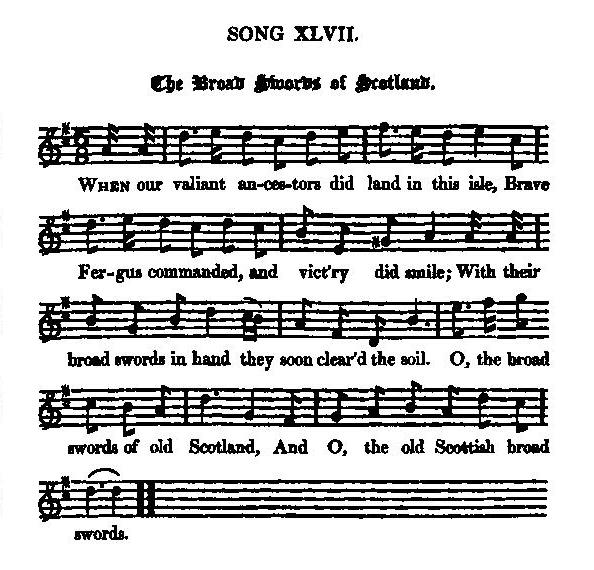

The Broad Swords of Scotland
La large épée d'Ecosse
Author unknown
Tune - Melodie"The Broad Swords of Scotland"
from Hogg's "Jacobite Reliques" part I, N°47
Sequenced by Christian Souchon

|
"Is a popular song, said to have been written by an English gentleman who was sojourning here after the time of the Union, and witnessed the feelings of the country-people on that occasion. The nationality of the song has made it a favourite, although the air be originally an English one."
James Hogg in "Jacobite Relics. |
"On attribue ce chant populaire à un Anglais, présent en Ecosse juste après l'Union et qui voulut témoigner des sentiments des gens du pays. Le sentiment national qu'il exprime explique son succès, bien que la mélodie soit d'origine anglaise.
James Hogg dans "Reliques Jacobites" |

|
THE BROAD SWORDS OF SCOTLAND
1. When our valiant ancestors did land in this isle, Brave Fergus [1] commanded and vict'ry did smile With their broad swords in hand they soon clear'd the soil. O, the broad swords of old Scotland, And O, the old Scottish broad swords. 2. The Romans, the Picts, and the old Britons too, [2] Us, by fraud and by guile, did attempt to subdue; But their schemes prov'd abortive, while we prov'd true. O, the broad swords of old Scotland, And O, the old Scottish broad swords. 3. Though some factious nobles, to serve their own end, Would join with the English, themselves to befriend, And we lost at first, yet they did in the end. O, the broad swords of old Scotland, And O, the old Scottish broad swords. 4. Remember brave Wallace [3], who boldly did play; Bruce, at Bannockburn [4], that glorious day: The flowers of old England our heroes did slay. O, the broad swords of old Scotland, And O, the old Scottish broad swords. 5. See Edward, their king, take his heels in a fright, Nor e'er look behind, but in Berwick alight; In an old fishing-boat he bade Scotland good-night. O, the broad swords of old Scotland, And O, the old Scottish broad swords. 6. Our Scottish ancestors were valiant and bold, In learning ne'er beat, nor in battle control'd; But new—shall I name it ? — alas! we're all sold. [5] O, the broad swords of old Scotland, And O, the old Scottish broad swords. Source: "The Jacobite Relics of Scotland, being the Songs, Airs and Legends of the Adherents to the House of Stuart" collected by James Hogg, published in Edinburgh by William Blackwood in 1819. |
LA LARGE EPEE D'ECOSSE
1. Quand nos ancêtres abordèrent en ces lieux Commandés par Fergus [1], ils étaient victorieux; Grâce à la large épée, cet outil merveilleux. La large épée de l'Ecosse, La large épée des Ecossais. 2. Les Romains et les Pictes, les anciens Britons [2] Ont tenté de nous imposer la sujétion; Mais en vain, devant notre détermination. La large épée de l'Ecosse, La large épée des Ecossais. 3. Quand pour servir leurs fins, des nobles querelleurs S'allièrent aux Anglais, pour gagner leurs faveurs Nous perdîmes d'abord, avant d'être vainqueurs. La large épée de l'Ecosse, La large épée des Ecossais. 4. Rappelez-vous Wallace [3], un guerrier valeureux, Et Bruce, à Bannockburn, [4] ce combat glorieux Où la fleur des Saxons fut fauchée par nos preux. La large épée de l'Ecosse, La large épée des Ecossais. 5. Comme la peur tenaille Edouard, leur roi! Voyez! Il s'enfuit à Berwick, n'ose se retourner, Prend congé de l'Ecosse à bord d'un chalutier! La large épée de l'Ecosse, La large épée des Ecossais. 6. Les anciens Ecossais, vaillants, ne tremblaient pas, Refusant les leçons et maîtres des combats. Vendus, [5] ceux d'aujourd'hui, hélas, ont chu bien bas! La large épée de l'Ecosse, La large épée des Ecossais. (Trad. Christian Souchon(c)2009) |
|
[1]
Fergus Mór Mac Earca
(Fergus the Great, son of Erc) was a legendary king of Dál Riata, an Irish kingdom on the western seaboard of Scotland, in the year 501, according to the Annals of Tigernach. In later accounts he is said to have been the fist king of Scotland where he had brought the famous Coronation Stone of Scone.
[2] The Romans, the Picts, and the old Britons : since the Scots are descended from Picts (North), Britons (Strathclyde) and Gaels (Dal Riata), the sentence applies in fact only to Romans who instead of conquering the country built two defensive walls. [3] William Wallace (1270 - 1306): one of Scotland's greatest national heroes who led the Scottish resistance forces during the first year of its long struggle to free Scotland from English rule. He was tortured and beheaded, as a traitor to the English king, Edward I, in London, in 1306. [4] The battle of Bannockburn (23/24.6.1314) was the decisive battle in the First War of Scottish Independence. King Edward II of England's army of 2.000 horse and 16.000 foot was defeated by the Scottish army of King Robert Bruce that might have numbered 7.000 men in all. [5] We're all sold : Allusion to the dubious aspects of the Acts of Union (1707) involving payments considered by many as direct bribery. The same idea is expressed far more energetically by Robert Burns in "A Parcel of Rogues" . |
[1]
Fergus Mór Mac Earca
(Fergus le Grand, fils d'Erc) était le roi légendaire du Dàl Riata, ce royaume irlandais sur la bordure occidentale de l'Ecosse, en 501, à en croire les Annales de Tigernach. Dans des récits plus récents, on en fait le premier roi d'Ecosse où il aurait apporté la fameuse Pierre de Scone sur laquelle les rois sont couronnés.
[2] Les Romains et les Pictes, les anciens Britons : si l'on considère les Ecossais comme les descendants des Pictes, des Britons du nord (Strathclyde) et des Gaëls du Dal Riata, la phrase ne s'applique en fait qu'aux Romains qui renoncèrent à conquérir le pays, se contentant d'y ériger deux murailles (Adrien au sud, et Antonin au nord). [3] William Wallace (1270 - 1306): l'une des grandes figures héroïques de l'Ecosse qui prit la tête de la résistance la première année de sa longue lutte pour libérer son pays de la domination anglaise. Il fut atrocement torturé et décapité à Londres, accusé de traîtrise envers le roi Edouard I, en 1306. [4] La bataille de Bannockburn (23/24 juin 1314) décida du sort de la Première guerre d'indépendance de l'Ecosse. Le Roi d'Angleterre Edouard II et son armée de 2.000 cavaliers et 16.000 fantassins furent défaits par l'armée du roi d'Ecosse Robert le Bruce qui rassemblait, tout au plus, 7.000 hommes. [5] Vendus, ceux d'aujourd'hui... : allusion aux aspects louches des Actes d'Union de 1707, où furent effectués des paiements qui ressemblent fort à de la corruption active. La même idée est exprimée de façon plus énergique par Robert Burns dans "Une bande de vauriens". . |
|
|
|